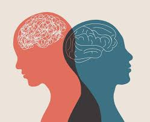
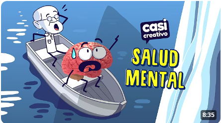

¿Qué debemos saber? Dos personas subiendo una montaña al atardecer Para lograr el bienestar emocional necesitamos encontrar un balance en todos los aspectos de nuestra vida: física, mental, emocional y espiritual. Es la habilidad de poder disfrutar la vida y a la vez de afrontar los problemas diarios que nos van surgiendo, ya sea tomando decisiones, lidiando y adaptándose a situaciones difíciles o dialogando acerca de nuestras necesidades y deseos. La vida y las circunstancias cambian continuamente, por tanto, nuestro carácter, pensamientos y sentimientos también fluctúan. A veces es normal sentir malestar: tristeza, preocupación, temor o inquietud. Pero estos tipos de sentimientos se convierten en problema cuando empiezan a obstaculizar la vida diaria por un periodo prolongado de tiempo.

Las emociones son reacciones psicofisiológicas automáticas y complejas que experimentamos ante estímulos internos o externos, representando una forma de adaptación a nuestro entorno
